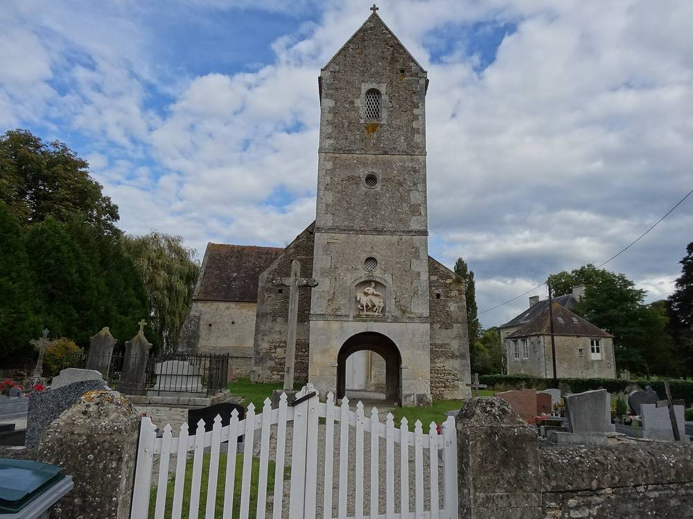

프랑스 칼바도스 두 마을에 풍력 7기·39.9MW, 2027년 초 가동…마을 몫은 지방세와 '마을길 사용료' 연 8만~10만7,000유로

2022년 4월 허가 뒤 소송에 막혀 2024년 12월에야 확정…3기 서는 바루앙오주 연 약 8만 유로, 4기 서는 노레앙오주 연 약 10만7,000유로, 코뮌 연합 약 17만1,300유로·도 약 9만6,000유로
프랑스 노르망디 칼바도스도 팔레즈 인근의 두 마을 바루앙오주(Barou-en-Auge)와 노레앙오주(Norrey-en-Auge)에 높이 190m 풍력발전기 7기, 합계 39.9MW 규모의 풍력단지가 세워지고 있으며 2027년 초 가동할 예정이다. 발전기는 노레앙오주에 4기, 바루앙오주에 3기가 들어서고, 2017년부터 사업을 준비해 온 개발사 VSB 에네르지 누벨(VSB énergies nouvelles)이 노르덱스(Nordex)와 함께 사업을 맡고 있다. 2018년 1월 조사를 시작하면서 주민 약 50명이 모인 설명 모임을 열었고 2018~2019년 협의 워크숍·포럼과 브르타뉴 풍력단지 견학을 거쳐 2022년 4월 칼바도스 도지사 허가를 받았지만, 허가에 맞선 소송으로 공사가 늦어지다 2024년 12월 마지막 소송이 정리되면서 허가가 확정됐다. 현장에서는 최근 첫 날개 조립이 이뤄졌으며, 한 장 무게가 23톤인 날개 21장이 길이 85m·무게 70톤의 트럭에 실려 밤에 호송 차량 행렬로 들어오고 있다. 해마다 바루앙오주는 지방세 수입 약 3만8,000유로와 마을길 사용 계약금 4만2,000유로, 노레앙오주는 지방세 수입 약 5만 유로와 마을길 사용 계약금 5만7,000유로를 받게 되고, 팔레즈 지역 코뮌 연합은 연 약 17만1,300유로, 칼바도스도는 연 약 9만6,000유로를 받는다. 개발사는 설명 모임과 워크숍에 더해 집집이 찾아가 주민을 만났다고 밝혔지만, 주민이 발전기에 출자하거나 지분을 갖는 계획은 알려지지 않았다.
시민에너지 관점
3기가 서는 마을은 연 약 8만 유로, 4기가 서는 마을은 연 약 10만7,000유로를 받는데, 그 절반 남짓은 세금이 아니라 공사·운영 차량이 마을길을 쓰는 대가이고 39.9MW 발전소가 전기를 팔아 버는 수익은 마을 계산서 어디에도 없다. 설명 모임과 워크숍, 집집 방문까지 했으니 충분히 협의했다는 반론이 나올 수 있지만, 그렇게 공을 들이고도 허가가 소송에 묶여 2년 8개월을 흘려보냈다는 사실은 주민을 설득의 대상으로만 둔 협의의 한계를 보여 준다. 독일 바이에른 치메츠하우젠 풍력 계획과 마찬가지로 마을 몫이 세금과 사용료에 그치는 구조에서는 바람이 마을의 소득이 되지 못하며, 주민이 발전소 지분을 가질 때 반대는 참여로 바뀌고 수익은 지역에 남는다. 국내 육상·해상 풍력도 인허가에 앞서 주민 몫을 사용료나 지원금이 아니라 지분으로 정하는 기준부터 세워야 한다.
출처: actu.fr (Les Nouvelles de Falaise) 2026-10-31 Rédaction Falaise(기자 이름 미표기) 원문 보기
창간 전 시험 발행 기사입니다.
仏カルヴァドス県の2村に風車7基・39.9MW、2027年初めに稼働へ…村の取り分は地方税と「村道使用料」で年8万～10万7,000ユーロ
2022年4月の許可後、訴訟で2024年12月にようやく確定…3基のバルー＝アン＝ノージュは年約8万ユーロ、4基のノレ＝アン＝ノージュは年約10万7,000ユーロ、市町村共同体は約17万1,300ユーロ・県は約9万6,000ユーロ
フランス・ノルマンディー地方カルヴァドス県ファレーズ近郊の2つの村、バルー＝アン＝ノージュ（Barou-en-Auge）とノレ＝アン＝ノージュ（Norrey-en-Auge）で、高さ190mの風車7基、合計出力39.9MWの風力発電所の建設が進んでおり、2027年初めに稼働する予定だ。風車はノレ＝アン＝ノージュに4基、バルー＝アン＝ノージュに3基が建ち、2017年から事業を準備してきた開発会社VSBエネルジー・ヌーヴェル（VSB énergies nouvelles）がノルデックス（Nordex）とともに事業を担っている。2018年1月に調査を始めた際に住民約50人が集まる説明会を開き、2018～2019年の協議ワークショップ・フォーラムやブルターニュの風力発電所見学を経て2022年4月にカルヴァドス県知事の許可を得たが、許可に対する訴訟で工事が遅れ、2024年12月に最後の訴訟が片付いて許可が確定した。現場では最近、最初のブレードの組み立てが行われ、1枚23トンのブレード21枚が長さ85m・重さ70トンのトラックに載せられ、夜間に車列を組んで運び込まれている。毎年、バルー＝アン＝ノージュは地方税収入約3万8,000ユーロと村道使用契約金4万2,000ユーロ、ノレ＝アン＝ノージュは地方税収入約5万ユーロと村道使用契約金5万7,000ユーロを受け取り、ファレーズ地域市町村共同体は年約17万1,300ユーロ、カルヴァドス県は年約9万6,000ユーロを受け取る。開発会社は説明会やワークショップに加え戸別訪問で住民に会ったとしているが、住民が風車に出資したり持ち分を持ったりする計画は明らかにされていない。
市民エネルギーの視点
3基が建つ村は年約8万ユーロ、4基が建つ村は年約10万7,000ユーロを受け取るが、その半分余りは税ではなく工事・運営車両が村道を使う対価であり、39.9MWの発電所が電気を売って得る収益は村の収支のどこにも見当たらない。説明会やワークショップ、戸別訪問まで行ったのだから協議は十分だという反論もあり得るが、それだけ手を尽くしても許可が訴訟に縛られて2年8カ月を費やしたことは、住民を説得の対象としか見ない協議の限界を示している。ドイツ・バイエルン州ツィーメッツハウゼンの風力計画と同じく、村の取り分が税と使用料にとどまる仕組みでは風は村の所得にならず、住民が発電所の持ち分を持ってこそ反対は参加に変わり、収益は地域に残る。韓国でも陸上・洋上風力の許認可に先立ち、住民の取り分を使用料や支援金ではなく持ち分として定める基準をまず設けるべきだ。
出典: actu.fr（レ・ヌーヴェル・ド・ファレーズ Les Nouvelles de Falaise） 2026-10-31 ファレーズ編集部（Rédaction Falaise、記者名なし） 原文を読む
創刊前の試験発行記事です。
法国卡尔瓦多斯两村建7台风机、39.9MW，2027年初投运…村庄所得仅为地方税和“村道使用费”，每年8万至10万7,000欧元
2022年4月获批后因诉讼拖到2024年12月才最终确定…建3台的巴鲁昂诺日每年约8万欧元，建4台的诺雷昂诺日每年约10万7,000欧元，市镇联合体约17万1,300欧元、省约9万6,000欧元
法国诺曼底大区卡尔瓦多斯省法莱斯附近的两个村庄巴鲁昂诺日（Barou-en-Auge）和诺雷昂诺日（Norrey-en-Auge）正在建设一座由7台高190米风机组成、总装机39.9MW的风电场，计划于2027年初投入运行。风机中4台建在诺雷昂诺日，3台建在巴鲁昂诺日，项目由自2017年起筹备的开发商VSB新能源（VSB énergies nouvelles）与诺德克斯（Nordex）共同承担。2018年1月启动调查时召开了约50名居民参加的说明会，又经过2018至2019年的协商工作坊、论坛以及布列塔尼风电场参观，于2022年4月获得卡尔瓦多斯省长许可，但针对许可提起的诉讼使工程延误，直到2024年12月最后一起诉讼了结，许可才最终确定。现场最近完成了第一片叶片的组装，每片重23吨的21片叶片由长85米、重70吨的卡车在夜间以护送车队方式运入。每年巴鲁昂诺日将获得约3万8,000欧元地方税收入和4万2,000欧元村道使用合同款，诺雷昂诺日将获得约5万欧元地方税收入和5万7,000欧元村道使用合同款，法莱斯地区市镇联合体每年约17万1,300欧元，卡尔瓦多斯省每年约9万6,000欧元。开发商表示除说明会和工作坊外还挨家挨户拜访了居民，但尚未公布居民出资或持有风机股份的计划。
市民能源视角
建3台风机的村每年约得8万欧元，建4台的村每年约得10万7,000欧元，其中一半多不是税收，而是施工和运维车辆使用村道的补偿，而39.9MW电站卖电所得的收益在村庄账本上无处可寻。有人会说，开了说明会、工作坊，还挨家挨户走访，协商已经足够；但即便下了这么大功夫，许可仍被诉讼拖了2年8个月，这说明只把居民当作说服对象的协商有其局限。与德国巴伐利亚州齐梅茨豪森的风电计划一样，村庄所得止于税收和使用费的结构无法让风变成村庄的收入；只有居民持有电站股份，反对才会变为参与，收益才能留在当地。韩国的陆上和海上风电也应在审批之前，先确立把居民份额定为股权而非使用费或补助金的标准。
来源: actu.fr（法莱斯新闻 Les Nouvelles de Falaise） 2026-10-31 法莱斯编辑部（Rédaction Falaise，未署记者名） 查看原文
本文为创刊前试发行文章。
Seven wind turbines, 39.9MW, due online in early 2027 in two Calvados villages in France; the villages' share is local tax plus 'road-use fees' of 80,000 to 107,000 euros a year
Authorised in April 2022 but held up by legal challenges until December 2024; Barou-en-Auge with three turbines gets about 80,000 euros a year, Norrey-en-Auge with four about 107,000 euros, the community of communes about 171,300 euros and the department about 96,000 euros
A wind farm of seven 190-metre turbines with a combined capacity of 39.9MW is being built in Barou-en-Auge and Norrey-en-Auge, two villages near Falaise in the Calvados department of Normandy, France, and is scheduled to start operating in early 2027. Four turbines are going up in Norrey-en-Auge and three in Barou-en-Auge, and the project is carried by developer VSB énergies nouvelles, which has been working on it since 2017, together with Nordex. Studies began in January 2018 with an information meeting attended by about 50 residents, followed in 2018-2019 by consultation workshops, forums and a visit to a wind farm in Brittany, and the Calvados prefect authorised the project in April 2022, but legal challenges against the permit delayed construction until the last of them were cleared in December 2024. The first blade was recently assembled on site, and the 21 blades, each weighing 23 tonnes, arrive by night in escorted convoys on trucks 85 metres long and weighing 70 tonnes. Each year Barou-en-Auge is to receive about 38,000 euros in local tax revenue and 42,000 euros under road-use agreements, Norrey-en-Auge about 50,000 euros in local tax and 57,000 euros under road-use agreements, while the Pays de Falaise community of communes will receive about 171,300 euros and the Calvados department about 96,000 euros a year. The developer says it met residents door to door on top of the meetings and workshops, but no plan for residents to invest in the turbines or hold a stake in them has been made public.
Citizen Energy View
The village with three turbines gets about 80,000 euros a year and the one with four about 107,000 euros, and just over half of that is not tax but payment for construction and maintenance vehicles using village roads, while the revenue a 39.9MW plant earns from selling power appears nowhere in the villages' accounts. Some will argue that information meetings, workshops and door-to-door visits amount to ample consultation, yet even with all that effort the permit spent two years and eight months tied up in court, which shows the limits of consultation that treats residents only as people to be persuaded. As with the wind plan in Ziemetshausen, Bavaria, a model in which the village's share stops at taxes and fees does not turn the wind into local income; when residents own a stake in the plant, opposition becomes participation and the returns stay in the area. Korea should likewise set a rule, before licensing onshore and offshore wind, that defines residents' share as equity rather than fees or subsidies.
Source: actu.fr (Les Nouvelles de Falaise) 2026-10-31 Rédaction Falaise (no reporter named) Read the original
This article was published during the trial period before launch.